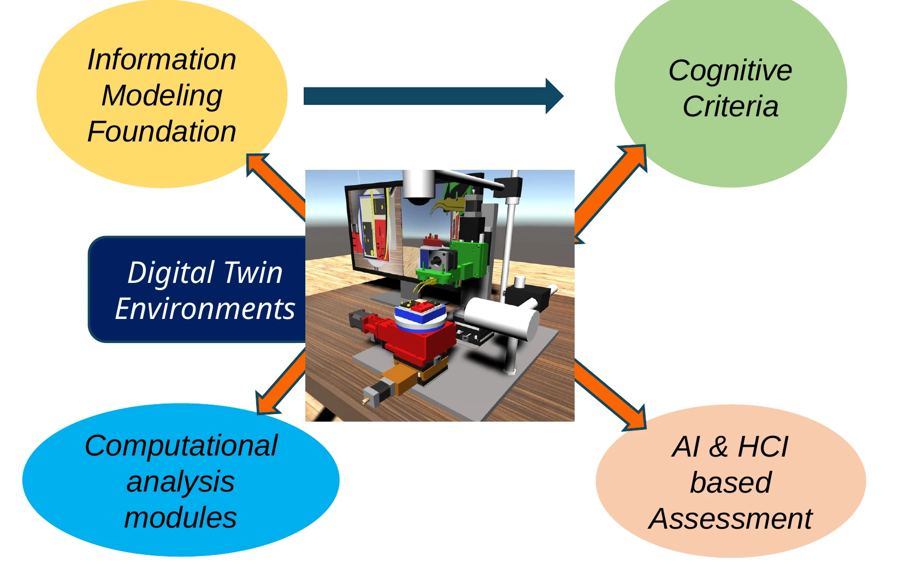
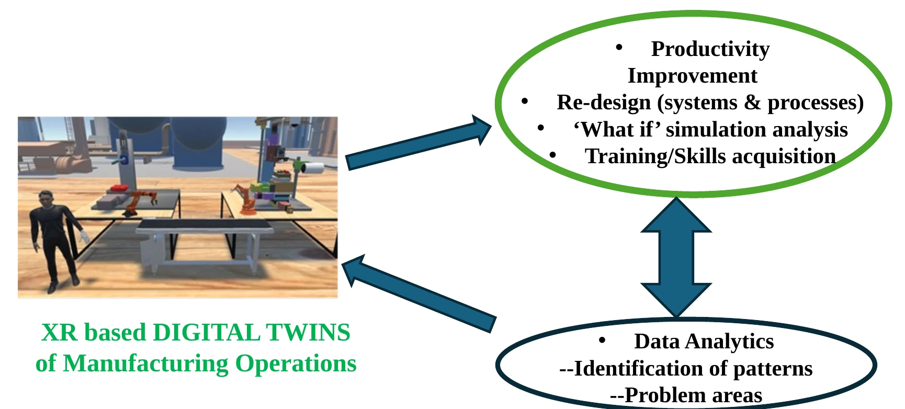
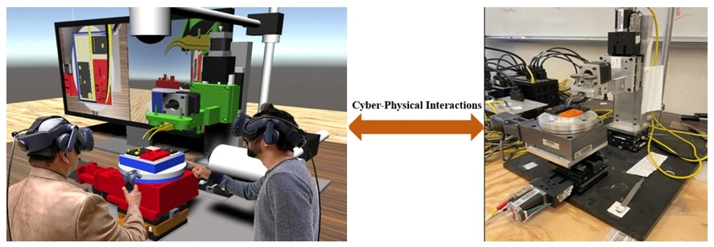

advanced manufacturing and robotics (cognitive and smart manufacturing, industry 4.0/5.0)
02 / Domains
Different worlds.
One engineering language.
Purpose-built tools for the places where digital intelligence and physical reality meet.
OUR DOMAINS
Where we work
Our services are primarily geared towards creating customized cyber tools and environments for engineering and medical organizations. These include
medicine and health care (smart health)
space systems (near and deep space mission to Moon and Mars).
CYBER LEARNING
We also can build learning tools to help autistic students learn science and engineering topics. We will be glad to work with K-12 programs and schools.



